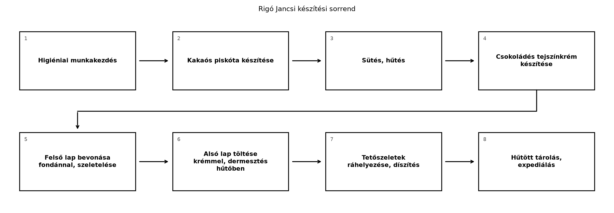
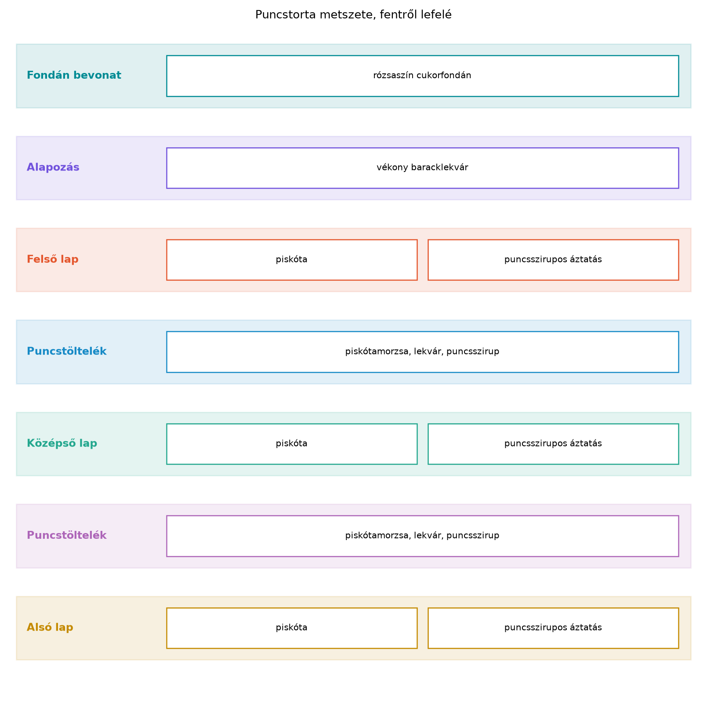

Ebben az alfejezetben a korábban tanult tortakészítési műveleteket további magyar klasszikusokra alkalmazzuk: Rigó Jancsi, puncstorta, gesztenyetorta és Rákóczi túrós. A hangsúly nem a minél több díszítőelem megtanulásán van, hanem azon, hogy az egyes torták szerkezete, krémrendszere és hűtési technológiája miért működik, és hogyan őrizhető meg a hagyomány úgy, hogy közben élelmiszerbiztonsági szempontból is korszerű legyen.
Egy cukrászüzemben gyakori vendégkérés: „Rigó Jancsit szeretnék a születésnapra, olyat, mint régen a cukrászdában.” A vendég nemcsak egy édes tésztát kér, hanem egy emléket és egy hagyományos szerkezetet: csokoládés, puha piskóta, habos tejszínkrém, fényes bevonat. Ugyanilyen klasszikus a rumos-citromos puncstorta, a gesztenyetorta és a sárgabaracklekvárral, túróval, tojáshabbal készülő Rákóczi túrós.
Ha a cukrász csak „összerak” egy csokoládés tortát, de a piskóta tömör, a tejszínkrém nem elég hideg, vagy a bevonat megfolyik, a vendég nem a megszokott klasszikust kapja. Ezért ebben az alfejezetben a klasszikus termékek technológiai gerincét tanuljuk meg: milyen tésztát, krémrendszert és bevonást válasszunk, hogy a torta egyszerre legyen hagyományos jellegű és mai higiéniai követelményeknek megfelelő.
Képzelj el egy tortaszeletet kiemelve, mintha metszetet rajzolnál:
A hagyományőrző torta ereje a rétegek egyensúlya: a tészta statikai tartást ad, a krém ízt és nedvességet, a bevonat védi a felületet. Ha bármelyik réteg túl nedves, túl száraz vagy nem dermedt meg, a torta szeleteléskor szétesik.
Definíció. Hagyományőrző torta. Olyan cukrászati készítmény, amelynek összetétele, rétegrendje, jellegzetes eljárása és ízképe a magyar cukrászati gyakorlatban hosszabb időn át, több generáció szakmai munkájában fennmaradt, és a terméket ma is felismerhetővé teszi.
Definíció. Eredeti receptúra. Valamely korabeli szakkönyvben, kéziratban, üzemi receptgyűjteményben vagy ismert mesternél fennmaradt anyaghányad és eljárás. A mai felhasználáskor az „eredeti” megnevezés csak akkor pontos, ha a forrás megnevezhető. Ha a pontos arány nem igazolható, tanulási receptúraként közöljük a szakmában elterjedt változatot.
Megjegyzés. A „klasszikus” fogalom nem jogi
kategória. A hagyományőrzés nem jelenti automatikusan, hogy a termék
oltalom alatt áll. Az oltalom külön eljárás eredménye lehet (például
uniós eredetvédelem, védjegy), ezt mindig ellenőrizni kell az adott
terméknél (ellenőrizendő: oltalmi státusz).
Szabály. Tanulási recept. Ha egy hagyományos recept pontos aránya vitatott vagy forrása nem igazolható, a tankönyv a szakmában széles körben használt, jól működő arányt adja meg, és ezt kimondja. Így nem állítjuk valótlanul, hogy „ez az egyetlen hiteles eredeti”.
Továbbvitt eredmény. A klasszikus torták ezen rétegrendi logikáját a Klasszikus nemzetközi cukrászati termékek alfejezetben is használjuk, amikor nemzetközi tortákat (pl. Sacher, Fekete-erdő) elemzünk.
A hagyományőrző terméknél nemcsak a nyersanyaglista számít, hanem a műveleti sorrend és a felhasználási arány is.
Példa. A Rigó Jancsi klasszikus jellegét nem kizárólag a csokoládé adja, hanem az, hogy a tésztája könnyű kakaós felvert, a krém hidegen készült csokoládés tejszínkrém, a bevonata pedig csokoládéfondán vagy csokoládébevonat. Ha valaki vajas csokikrémmel tölti, az is jó torta lehet, de már más szerkezetű.
Higiénia. A hagyományos receptek gyakran „lágy” kifejezéseket használnak: „habosra keverjük”, „annyi tejszínt adunk hozzá, amennyit felvesz”. A tanulásban ezeket mérhetővé kell tenni: tömeg, hőmérséklet, idő, állag. Így a recept egyszerre marad hagyományos és reprodukálható.
Megjegyzés. A Magyarország Tortája verseny a mai
magyar cukrászati innováció fontos bemutatója, de célja alapvetően
új, kortárs termékek alkotása, nem pedig a régi
klasszikusok újraalkotása. A verseny a hagyományos alapanyagok és
technikák újragondolására is ösztönözhet, de a nyertes torta jellemzően
mai technológiájú termék. A hagyományőrző tortákat a Magyar Cukrász
Ipartestület és más szakmai testületek receptgyűjteményei, valamint a
cukrászattörténeti források őrzik
(ellenőrizendő: az aktuális versenykiírás és a szakmai testületi gyűjtemények).
A Rigó Jancsi hagyományos jellege: sötét, kakaós felvert tészta, közötte csokoládés tejszínkrém, felül csokoládéfondán vagy csokoládébevonat, gyakran tejszínhab-rozetta. A tejszínes krém miatt a hűtési lánc végig kritikus.
A tészta kakaós piskóta lehet, de gyakran készül úgy, hogy a tojáshabhoz kevés olvasztott vajat kevernek; így a tészta kakaós, mégis rugalmas. A krém csokoládéból és habtejszínből készül: a csokoládét enyhén megolvasztjuk, majd a hidegen vert tejszínhabhoz forgatjuk. A kakaóvaj megdermedése adja a krém testét, ezért használjunk jó minőségű étcsokoládét. A fejezetben részletesen leírt csokoládé-tejszínkrém logikát a Tejszínkrémek, bavarois, mousse és ganache-krémek tárgyalja; itt a tortába állítjuk össze.
A Rigó Jancsi jellegzetes arányát – vékony kakaós lapok, magas krémréteg, fényes fondántető – a kocka alakú szelet metszete mutatja. A fondántetőt külön vonjuk be és szeleteljük, a dermedt krémre csak ezután helyezzük: a meleg fondán a habos krémet megolvasztaná.
A hűtési lánc megszakadása esetén a tejszínes krém gyorsan romolhat, ezért a Rigó Jancsi kritikus pontja a hideg tartás.
A puncstorta (puncs + torta) jellemzője a világos és/vagy kakaós
piskótalap, a rumos-citromos puncsszirupos áztatás, a lekvárral és
sziruppal összedolgozott puncstöltelék (finomra tört
piskótamorzsa, baracklekvár, rum, citrom), a vékony baracklekváros
alapozás és a rózsaszínű fondánbevonat. Ez a fejezet tanulási receptet
ad; az eredeti arányokat szakmai testületi receptgyűjteménnyel kell
egyeztetni (ellenőrizendő: szakmai receptgyűjtemény). A
puncstöltelék nem tartalmaz nyers tojást. Az áztatószirupot
felforraljuk, majd kihűtve ízesítjük; az alkoholos ízesítésnél a rum
mennyiségét pontosan mérjük, és gyermekeknek szánt termékben
kerüljük.
A torta rétegrendje jellemzően:
A puncsszirup alkohol- és cukortartalma miatt a tészta nedvesebb lesz, de ettől nem lehet elázott. A töltelék nedves, lekvárt és szirupot tartalmaz, ezért hűtve tároljuk.
A gesztenyetorta héjában piskóta, töltelékében édes gesztenyemassza, vajkrém vagy gesztenyés krém, tetején tejszínhab. A gesztenyemassza jó vízmegkötő, ezért a torta lédús érzetet ad anélkül, hogy a piskóta elázzon. A krémbe gyakran kevernek rumot, ami az ízt erősíti.
Megjegyzés. A szelídgesztenye a 14 jelölendő
allergéncsoportban hivatalosan nem szerepel a felsorolt diófélék között,
de egyéni érzékenységet okozhat, és a gyártói gesztenyemassza lehet
diófélékkel keresztszennyezett. Kötelező allergénjelölés a gesztenyére
nincs, de az üzem önkéntes tájékoztatást adhat, a gyártói
gesztenyemassza diófélékre vonatkozó keresztszennyeződési
figyelmeztetését pedig a technológiai lapon át kell vezetni
(ellenőrizendő: gesztenye allergén besorolása, gyártói adatlap).
A Rákóczi túrós eltér az előzőktől, mert nem felvert tésztából, hanem
omlós tésztából készül. Az elősütött omlós tésztalapra
túrós tölteléket simítunk, a megsütött túrós rétegre tojáshab-rácsot
formázunk, a rács hézagait pedig sárgabaracklekvárral töltjük ki
(ellenőrizendő: szakmai receptgyűjtemény). Sütés után a
tojáshab könnyű, ropogós felületet ad, a túrótöltelék pedig szaftos,
savas-tejes ízt.
A Rákóczi túrós a cukrászati gyakorlatban inkább tepsiben készül, majd szeletelik, de tortaként is megjelenhet. Itt a hőkezelés biztosítja a biztonságot: a túrós töltelék és a tojáshab is sül, tehát nincs nyers tojásból készült, hőkezelés nélküli krém.
Jelölés. A termékválasztás a képzőhely
receptgyűjteménye szerint is változhat; ha a képzőhely más hagyományőrző
tortákat tanít, az itteni módszertani séma akkor is érvényes
(ellenőrizendő: képzőhelyi gyűjtemény).
A hagyományos receptek gyakran „tepsi” méretre szólnak. A cukrászüzemben adott átmérőjű, adott szeletszámú tortát kell készíteni, ezért a szorzószámot használjuk.
Számítás. 1. példa – Puncstorta nagyítása.
Egy tanulási recept 22 cm átmérőjű tortára van megadva. Hány szorzóval
készítsük el 28 cm átmérőjű formában, ha azonos rétegvastagságot
akarunk?
A torta alapterülete a kör területével arányos:
A szorzó:
Tehát minden nyersanyag mennyiségét kb. -szeresére kell növelni. A kész torta töltelékénél is ezt a szorzót alkalmazzuk, mert a rétegvastagság azonos marad. ∎
Számítás. 2. példa – Rigó Jancsi tepsiméret.
Egy tanulási recept 24 cm × 36 cm-es tepsihez szól, és 16 szeletet ad. A
vendég 30 cm × 40 cm-es tepsit kér, és 28 szeletet szeretne. Hány
szorzóval dolgozzunk?
A tepsik területaránya:
A szeletszám alapján is ellenőrizhetjük:
A két érték nem egyenlő, mert a nagyobb tepsi nagyobb szeleteket adna. Ha 28 darab, az eredeti méretű szeletet kérünk, akkor -szörös mennyiség kell. Ha viszont a tepsi méretéhez igazodunk, de csak annyi szelet kell, akkor a szeletméret nő. A gyakorlatban először a szeletszám és a kívánt szelettömeg alapján határozzuk meg a szükséges tészta- és krémtömeget, majd ellenőrizzük a tepsi méretét. ∎
Szabály. Bruttó mennyiség. A tészta sütési vesztesége miatt a nyersanyagok nettó tömegéből nem lesz ugyanakkora sült tömeg. A sütési veszteséget a korábbi Veszteség- és tömegnövekedés-számítás szerint kezeljük:
ahol
a veszteség tizedestörtben. Például ha egy piskóta sütési vesztesége kb.
12%, akkor
,
és 600 g sült tészta előállításához kb. 682 g nyers tésztamasszát kell
kimérni
(ellenőrizendő: a tényleges veszteség a receptúra és a berendezés szerint).
Jogszabály. A kikészített torták forgalomba
hozatalakor a fogyasztók tájékoztatására a 1169/2011/EU rendelet
szerinti jelölési követelményeket kell alkalmazni. A 14
allergéncsoportot fel kell tüntetni, így a tortáknál jellemzően a
glutént, tojást, tejet, adott esetben dióféléket, földimogyorót, szóját
és kén-dioxidot kell jelölni
(ellenőrizendő: a tételes allergénjelölés pontos tartalma).
Jogszabály. A tejszínes, tojásos és túrós termékek
hűtött tárolása a 852/2004/EK rendelet szerinti HACCP-alapú eljárás
részeként szabályozott. A hőfok- és időértékeket a NÉBIH útmutatói és a
magyar élelmiszer-higiéniai gyakorlat szerint kell meghatározni
(ellenőrizendő: hatályos NÉBIH-útmutató, hűtési hőmérséklet és idő).
Higiénia. A hagyományőrző tortáknál is tilos a kiolvadt tejszínes krém visszafagyasztása, a lejárt nyersanyag „megmentése” vagy a krémes termék szobahőmérsékleten tartása.
A továbbiakban a Rigó Jancsit mint hűtött tejszínes klasszikust vezetjük végig technológiai lappal. A gyakorlati munka előtt olvasd át a Felvert tésztából készült torták; hagyományőrző magyar torták: Dobos és Eszterházy alfejezetben tanult felvert tésztakészítést, mert itt azt használjuk.
Elkészíteni egy 24 cm × 36 cm-es tepsi méretű, 16 szeletre szeletelhető Rigó Jancsit, hűtött tejszínes krémmel, csokoládéfondán bevonattal, a klasszikus rétegrend szerint.
| Nyersanyag | Mennyiség (g) | Megjegyzés |
|---|---|---|
| Tojás (közepes, 50 g/db) | 300 | 6 db, mérve |
| Porcukor | 150 | piskótához |
| Búzaliszt | 75 | finomliszt |
| Kakaópor | 30 | holland kakaópor |
| Olvasztott vaj | 30 | kihűtve, a tésztába |
| Étcsokoládé (54% kakaó) | 250 | krémhez |
| Habtejszín 35% | 600 | hidegen |
| Porcukor | 20 | krémhez |
| Zselatin | 6 | opcionális, hideg vízben duzzasztva |
| Csokoládéfondán | 300 | bevonathoz |
| Tejszínhab a díszítéshez | 200 | hidegen felverve |
| Összes tömeg (nettó) | 1961 | a teljes receptre |
Ez a táblázat a sütési veszteséget és a bevonási veszteséget külön
nem tartalmazza; a veszteséget az üzemi kalkulációban kell hozzáadni. A
zselatin a klasszikus változatban nem mindig szerepel; biztonsági
segédletként erősíti a krém stabilitását. Ez a recept tanulási
recept, nem hiteles történeti forrásközlés
(ellenőrizendő: az eredeti vagy szakmai testületi változat arányai).
1. Termék neve, csoport, alapmennyiség.
Rigó Jancsi torta; felvert tésztából készült, csokoládés tejszínkrémmel
töltött klasszikus magyar torta. Alapmennyiség: 1 db 24 cm × 36 cm-es
tepsi, 16 szelet.
2–4. Műveleti sorrend, kritikus pontok, allergének.
(ellenőrizendő: hatályos hűtési hőmérséklet).(ellenőrizendő: hőkezelési érték).(ellenőrizendő: pontos hűtési hőmérséklet és expediálási idő).Kritikus pontok (HACCP-szemléletű összefoglaló).
| Lépés | Veszély | Megelőzés | Kritikus határ (tanulási) | Monitorozás | Helyesbítés | Dokumentum |
|---|---|---|---|---|---|---|
| Tejszín hűtött tárolása | mikrobaszaporodás | hűtő, gyors felhasználás | hűtőben 5 °C alatt | hőmérő, idő | a gyanús tejszín selejtezése | hűtőnapló |
| Csokoládés krém készítése | túl meleg csokoládé, túlhűlt tejszín | hőmérséklet-ellenőrzés | csokoládé max. 45–50 °C, tejszín hideg | hőmérő, szemrevételezés | újrakeverés vagy új tétel | gyártási lap |
| Dermesztés | a krém szétfolyik | elegendő hűtési idő | legalább 2 óra hűtő (ellenőrizendő) | idő, állag | tovább hűteni | gyártási lap |
| Tárolás/expediálás | hűtési lánc megszakad | hűtött szállítás | hűtve maradjon | hőmérő, logisztikai ellenőrzés | a melegedett termék selejtezése | szállítási lap |
Allergénsor. Glutén (búzaliszt), tojás, tej;
étcsokoládéban és díszítőanyagokban jelen lehet szója, diófélék,
földimogyoró, esetleg kén-dioxid. A gyártói jelölések alapján kell a
pontos allergénsort feltüntetni
(ellenőrizendő: az egyes alapanyagok allergéntartalma).
5. Minőségi jellemzők. A tészta egyenletesen puha, szivacsos; a krém habos, csokoládés, nem csomós; a bevonat fényes, egyenletes; a torta szeleteléskor tiszta, nem folyik szét, és nem száradt ki.
6. Tárolás, eltarthatóság, tálalás. Hűtve 5 °C
alatt, felhasználási idő a tejszínes krém miatt korlátozott, jellemzően
48 órán belül; hosszabb tárolás csak gyártói és hatósági útmutató
szerint (ellenőrizendő: eltarthatósági paraméterek). A
díszített tortát tiszta, zárható dobozban expediáljuk.
A technológiai folyamat ábrája:

A puncstorta rétegrendje:

Technológiai elv. Piskóta, puncsszirup,
puncstöltelék, vékony lekváros alapozás, rózsaszín fondán. Az arányok
tanulási értékek
(ellenőrizendő: szakmai receptgyűjtemény).
Figyelem. A forró cukorszirup és a fondán melegítése égési sérülést okozhat. A gépi habverésnél védőburkolat nélkül tilos benyúlni; a gép használata csak oktatás után, felügyelet mellett történjen.
Kritikus pont. A puncstöltelék nedves, lekvárt és
szirupot tartalmaz: csak tiszta, hűtve tárolt alapanyagból készülhet, és
a kész tortát hűtve kell tartani. Nyers tojást a töltelékbe nem teszünk.
Allergének: glutén (liszt), tojás (piskóta); a lekvár kén-dioxidot
tartalmazhat (ellenőrizendő: lekvár adatlap).
Technológiai elv. Világos piskóta, gesztenyés-vajas krém, tejszínhab.
Higiénia. A gesztenyés krém környezetében kerüljük a diófélék és a földimogyoró keresztszennyeződését, mert a vendég allergiája esetén már kis mennyiség is veszélyes lehet.
Technológiai elv. Omlós tészta, sárgabaracklekvár, túrótöltelék, tojáshab-rács.
(ellenőrizendő), majd a
túrótölteléket ráterítjük, és 170 °C-on kb. 25–30 percig sütjük, amíg
megköt (ellenőrizendő).(ellenőrizendő). A tojásos töltelék miatt a
maghőmérsékletet biztonságos sütött értékig kell vinni
(ellenőrizendő: hőkezelési érték).A klasszikus torták minőségellenőrzésekor mindig metszetben vizsgáljuk a tortát, nemcsak a tetejét.
Tömegellenőrzés. A kész szelet tömege a receptúrából számított tömegtől csak a gyártási veszteséggel térhet el. Ha a mérés jelentős eltérést mutat, ellenőrizzük a mért anyagokat és a szeletelés módját.
Hiba 1: a Rigó Jancsi krémjében csokoládédarabkák vannak, a
krém nem sima.
Tünet: rágás közben kemény, hideg csokoládécsomók.
Ok: a csokoládét túl hideg tejszínhez öntöttük, vagy nem temperáltuk
elő, ezért a kakaóvaj hirtelen megdermedt.
Megelőzés: az olvasztott csokoládét előbb kevés tejszínhabbal lazítsuk,
majd folyamatos mozdulattal forgassuk a többi habhoz. Javítás: a kész
habos krém nem melegíthető újra, mert a tejszínhab összeesik; a csomós
krém nem tálalható szép minőségben, a következő tételnél a csokoládét 45
°C körül, kevés tejszínhabbal előlazítva forgatjuk be.
Hiba 2: a gesztenyetorta vajkrémje kicsapódik, szemcsés
lesz.
Tünet: a krém túrószerűen szétesik.
Ok: a vaj túl hideg vagy túl meleg, a tojáskrém nem eléggé hűlt le, vagy
a vajat túl gyorsan adtuk hozzá.
Megelőzés: minden komponens szobahőmérsékletű, a tojáskrém hűtött, a
vajat kis adagokban dolgozzuk bele. Javítás: a tál falát vízfürdőn vagy
hőlégfúvóval kissé melegítjük, és keverés közben a krémet 20–24 °C-ra
hozzuk (ellenőrizendő), így újra emulgeálódik; a teljes krémet nem
melegítjük 30–35 °C-ra, mert a vaj megolvad.
Hiba 3: a Rákóczi túrós alja felázik.
Tünet: a tészta puha, szaftos, nem omlós.
Ok: a lekvár vagy a túró nedvességtartalma túl magas, illetve a tésztát
nem elősütöttük.
Megelőzés: a túrót jól lecsepegtetjük, a lekvárt vékonyan kenjük, a
tésztát hűtve, gyorsan dolgozzuk fel. Javítás: a kész terméket már nem
lehet teljesen helyrehozni; a hiba a jövőbeli tételnél előzhető meg.
Eset – hűtőhiba a Rigó Jancsinál.
Egy cukrászüzemben az esküvői torta előkészítése után a hűtő éjjel
leállt. A torta a hűtőben maradt, de a belső hőmérséklet reggelre 12
°C-ra emelkedett. A cukrász nem tudta megmondani, mennyi ideig állt
emelt hőmérsékleten. A tejszínes krém miatt a termék már nem tekinthető
biztonságosnak, ezért a tortát selejtezni kellett, és
értesítették a dolgozókat, hogy a hűtőadatokat dokumentálják. A
tanulság: a CCP monitorozás nemcsak a mérés, hanem az eltérés
esetén megtett helyesbítő tevékenység. Később a hűtőbe
automatikus hőmérséklet-jelzőt szereltek, amely riasztást küld. Ez a
példa mutatja, hogy a hagyományos termékeknél is az élelmiszerbiztonsági
döntéseket a hűtési lánc és a dokumentáció szerint hozzuk meg.
1. feladat (A.)
Határozd meg, mi a különbség a Rigó Jancsi és a gesztenyetorta
krémrendszere között a hűtési igény és a hőkezelés szempontjából!
2. feladat (A.)
Sorold fel a Rákóczi túrós rétegrendjét alulról felfelé, és nevezd meg
az allergéncsoportokat!
3. feladat (B.)
A Rigó Jancsi tanulási receptje 24 cm × 36 cm-es tepsihez 6 tojást ad.
Mennyi tojás kell 40 cm × 60 cm-es tepsihez, ha az arányokat a terület
szerint növeljük? A tojást tömeg szerint kezeld: 6 tojás = 300 g.
4. feladat (B.)
A puncstorta puncstölteléke 22 cm-es tortához 300 g piskótamorzsát ír
(tanulási érték). Mennyi piskótamorzsa kell 28 cm-es tortához, azonos
rétegvastagságnál, a területarány alapján?
5. feladat (C.)
Hibahelyzet: a gesztenyetorta krémje szemcsés, és a vaj kivált a
krémből. Milyen három dolgot ellenőriznél? Mi a legvalószínűbb ok, és
hogyan előzhető meg?
6. feladat (D.)
Készítsd el a Rigó Jancsit a technológiai lap alapján. Tölts ki egy
gyártási lapot: a hűtő hőmérséklete, a sütési idő, a krémkészítés
hőmérséklete, a dermesztési idő és a késztermék tömege. Értékeld a
tortát metszetben is!
Önellenőrzés – válaszok
1. feladat megoldás.
Rigó Jancsi: hideg csokoládés tejszínkrém, nincs tojáskrém-főzés, de a
tejszínes krém hűtése kritikus. Gesztenyetorta: hőkezelt tojásos krém,
amelyet főzünk, lehűtünk, majd vajjal habosítunk és gesztenyemasszával
ízesítünk. Mindkettő hűtött tárolást igényel, de a hőkezelés szerepe
más.
2. feladat megoldás.
Rétegrend: elősütött omlós tészta, túrótöltelék, tojáshab-rács, a rács
hézagaiban sárgabaracklekvár. Allergének: glutén (liszt), tojás (tészta
és töltelék, tojáshab), tej (tehéntúró, tejföl, vaj); a lekvár
kén-dioxidot tartalmazhat
(ellenőrizendő: lekvár adatlap).
3. feladat megoldás.
Régi terület: 24 × 36 = 864 cm². Új terület: 40 × 60 = 2400 cm².
Szorzó: 2400 / 864 = 2,78.
Tojás tömeg: 300 g × 2,78 = 834 g.
Közepes 50 g-os tojással: 834 / 50 = 16,7, tehát gyakorlatilag 17 tojás,
de pontosan 834 g tojást mérünk.
Ellenőrzés: 17 tojás × 50 g = 850 g, ami a kerekítési veszteséggel
elfogadható.
4. feladat megoldás.
A területarány az átmérők négyzetével arányos:
22 cm-es sugara 11 cm, 28 cm-es sugara 14 cm.
Szorzó: (14/11)^2 = 196/121 = 1,62.
Piskótamorzsa: 300 g × 1,62 = 486 g.
A többi nyersanyagot is 1,62-szeresére növeljük.
5. feladat megoldás.
Ellenőrzés: a vaj hőfoka, a tojáskrém hőfoka, a keverés sebessége és a
hozzáadás üteme. A legvalószínűbb ok: a vaj túl hideg, vagy a tojáskrém
nem volt eléggé lehűtve, ezért az emulzió megtört. Megelőzés: minden
komponens megfelelő hőmérsékletű legyen, a vajat kis adagokban keverjük
bele.
6. feladat megoldás.
A tanuló a gyakorlatban elkészíti a tortát. Értékelési szempontok: a
piskóta maghőmérséklete és állaga, a krém simasága és hűtési
hőmérséklete, a dermesztési idő, a bevonat egyenletessége, a kész torta
tömegének egyezése a számítottal, az allergénjelölés és a hűtő
dokumentálása.
A hagyományőrző és klasszikus magyar torták technológiája a rétegrend, a krémrendszer és a hűtés egyensúlyán alapul. A Rigó Jancsi csokoládés tejszínkrémmel készül, ezért a hűtési lánc kritikus; a puncstorta puncsszirupos áztatással, puncstöltelékkel és rózsaszín fondánnal; a gesztenyetorta gesztenyemasszás krémje miatt lédús, hűtött termék; a Rákóczi túrós omlós tésztára épül, túrótöltelékkel és sült tojáshabbal. Az „eredeti receptúra” csak megnevezhető forrással pontos; ha ilyen nincs, tanulási receptet adunk. A hagyományőrző jelleg nem automatikus jogi oltalom. A Magyarország Tortája verseny elsősorban a modern innovációt díjazza. Minden tejszínes, tojásos és túrós terméknél a HACCP-elvek szerint dokumentálni kell a hőkezelést, a hűtést és az eltérés esetén a helyesbítő tevékenységet. A receptúra-átszámításkor a terület- vagy szeletszám-arányból képzett szorzószámot használjuk; a sütési veszteséget a bruttó tömeg számításához figyelembe vesszük. A továbbvitt eredmény: a klasszikus torták rétegrendi és hűtési logikáját a nemzetközi klasszikusok elemzésében is alkalmazzuk.
Szakmai forráselemek (típus szerint): a magyar cukrász hagyományőrző receptgyűjtemények, a Magyar Cukrász Ipartestület közleményei, cukrászattörténeti munkák, a képzőhelyi technológiai lapok. A pontos eredeti arányok és a terméknév-használat mindig forráskritikát igényel.
Ellenőrizendő pontok: a 1169/2011/EU rendelet szerinti allergénjelölés pontos alkalmazása; a NÉBIH hűtési, hőkezelési és eltarthatósági útmutatói; a gesztenye allergén besorolása; a Magyarország Tortája verseny aktuális kiírása; a hagyományőrző termékek oltalmi státusza; a tanulási receptek összetétele és a sütési veszteség értékek; a hőmérsékletek és idők üzemi/gyártói adatok szerinti pontosítása.